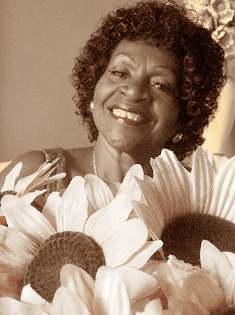

Otros musicos criollos:
- Lucila Campos creció en un ambiente de musica afroperuana y comenzo su carrera a temprana edad, pero murio debido a una complicacion de su diabetes en el 2016.
- Lucia de la Cruz comenzó su carrera a los 6 años, canta generos como vals, salsa, musica criolla y afroperuana. Su tipo de voz es Mezzosoprano, hoy en dia sigue viva.
- Carmencita Lara comenzó su carrera a los 15 años y es recordada por su voz aguda acompañado del sonido de un acordeón; lamentablemente murió en el 2018.
- Alicia Lizárraga comenzó su tarea a temprana edad, migró de Arequipa a Lima, fue una cantautora y era conocida como "Cholita Linda del Perú"; murió en el 2004.
|

|